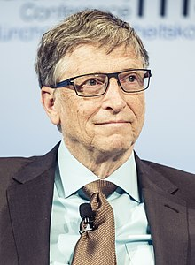

William Henry Gates III, más conocido como Bill Gates es un empresario, informático y filántropo estadounidense, conocido por haber creado y fundado junto con Paul Allen, la empresa Microsoft. De igual forma es conocido por haber creado, también con Paul Allen, el sistema operativo para computadoras Windows.
Su fortuna se calcula en 96.6 mil millones de dólares (2019) según la revista Forbes, hecho que le coloca como el cuarto hombre más rico del mundo. Antes del estallido de la burbuja de las punto com, su patrimonio neto ascendió a 114 100 millones de dólares, lo que lo convirtió en la décima persona más rica en toda la historia de la humanidad.
William Henry Gates III nació el 28 de octubre de 1955. Es hijo de William H. Gates, Sr, un destacado abogado, y de Mary Gates, profesora de la Universidad de Washington y directora del First Interstate Bank. Con ellos y su hermana, dos años mayor, vivió en la ciudad de Seattle, en el estado de Washington. Hasta sexto grado fue alumno regular de un colegio público.
Cursó estudios en la escuela privada de élite de Lakeside, en Seattle, esta escuela tenía ya una computadora en el año 1968, lo que le permitió a Gates tomar contacto con la máquina y aficionarse a la informática. También en Lakeside conoció a Paul Allen, con quien más tarde fundaría Microsoft.
El 4 de abril de 1975, siendo aún estudiante en la Universidad de Harvard crea la empresa de software Microsoft. En 1976 abandonó la universidad y se trasladó a Albuquerque, sede de MITS, para pactar con esa empresa la cesión del 50 % del lenguaje para computadoras Basic. Al año siguiente, se enteró del éxito de la empresa Apple y de que necesitaban un intérprete de Basic.
Introduccion a Windows 3.1